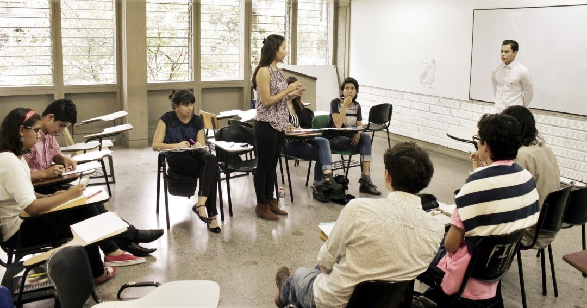

El Aprendizaje Activo

El Aprendizaje Activo es una técnica que les brinda a los estudiantes un papel protagónico dentro del aula de clases, al realizar actividades o dinámicas consideren que no solo se centran en el contenido de la materia, lo que les permite desarrollar un pensamiento critico para la resolución de problemas dentro del contexto de su sociedad.
La aplicación de esta metodología induce a reflexionar sobre cómo utilizar los conocimientos y aprendizajes incorporados en estos campos de estudio en muchos otros contextos, como pueden ser en la invención, la tecnología, el periodismo, el comercio, enseñanza y otros ámbitos de la vida cotidiana (Restrepo, 2018).